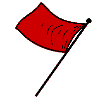

Witamy Cię na stronie głównej organizacji zrzeszającej polską, socjalistyczną młodzież, jaką jest Zjednoczony Komisariat Młodzieży Socjalistycznej. Na naszej stronie znajdziesz informacje, czym jesteśmy, jakie są założenia naszej działalności oraz skład naszego Komisariatu. Nasza strona zawiera również referaty tworzone przez Członków, pieśnie socjalistyczne, a także postanowienia, czyli zasady postępowania w organizacji.
Nasze godło składa się z kilku elementów, które są istotne dla całości idei. Kolory tła stanowią charakter organizacji. Czerwony jest główną barwą ruchów socjalistycznych, a niebieski oznacza pokój i bezpieczeństwo. Zębatka ma symbolizować pracę, czy to w fabryce, czy ku równości ludzkiej. Otwarta dłoń jest znakiem otwartości na pomysły ludzi i współpracę. Czerwona gwiazda stanowi kolejny symbol ideologii socjalistycznej.
Nasza organizacja stara się popularyzować socjalistyczną ideologię wśród młodzieży, lecz nie tylko. "Nie!" burżuazji, która wykorzystuje lud pracy do wzbogacania się i pogarsza warunki życia proletariatu. Żądamy równości między człowiekiem, a człowiekiem! Żądamy troski o drugiego człowieka, a nie o jego pieniądze!